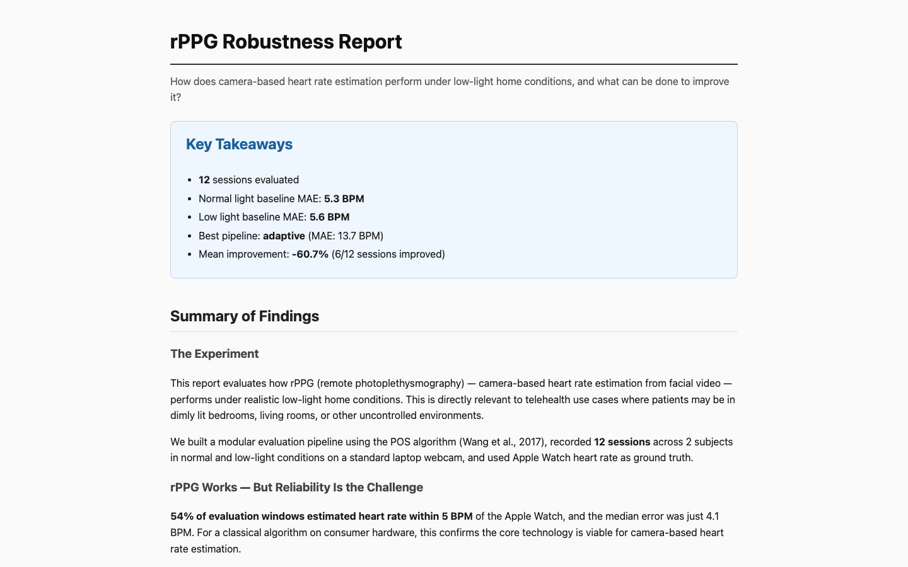
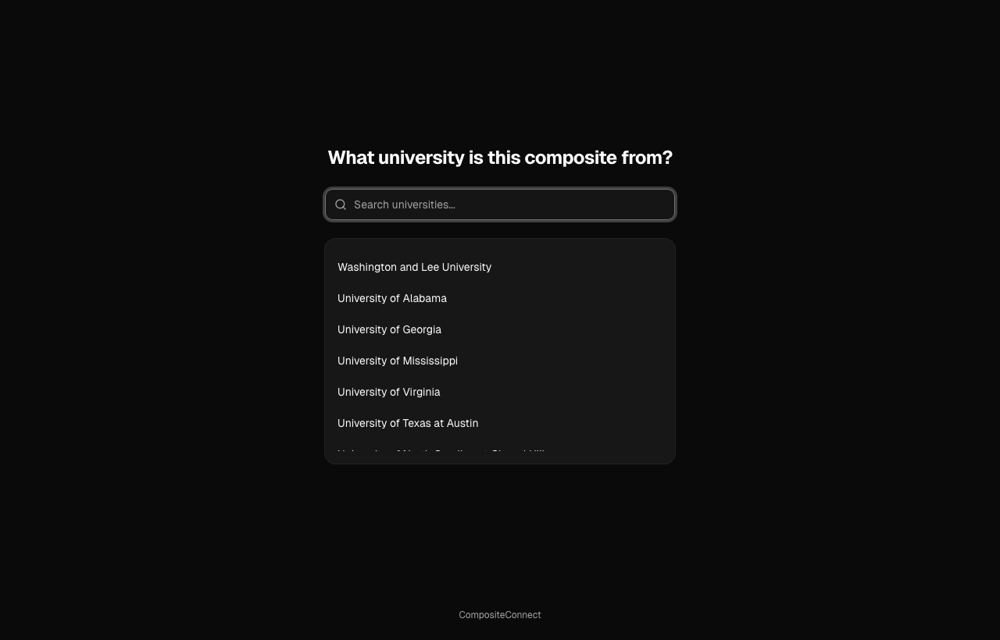
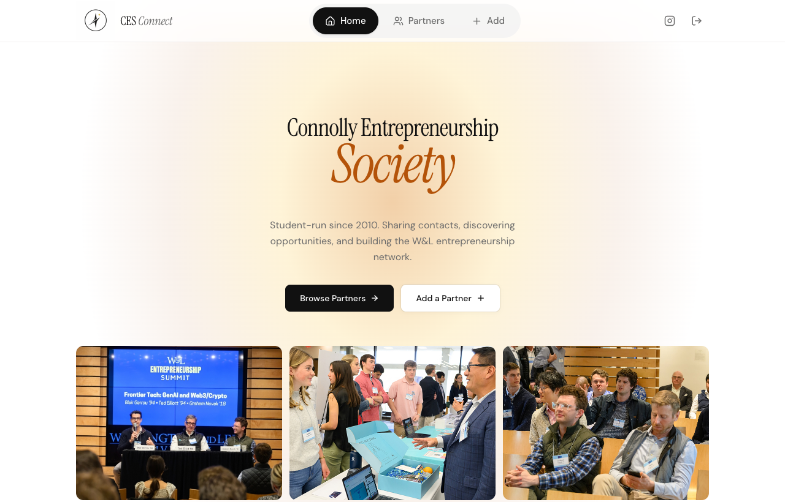
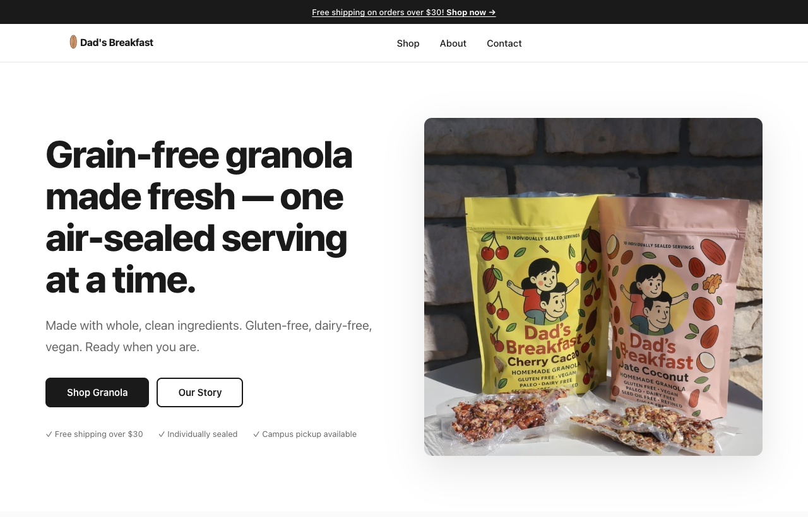
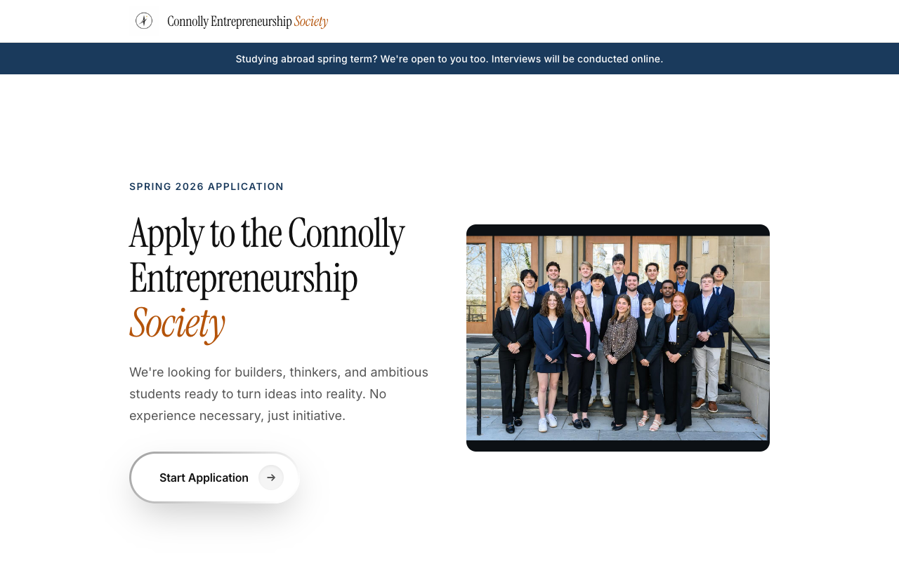
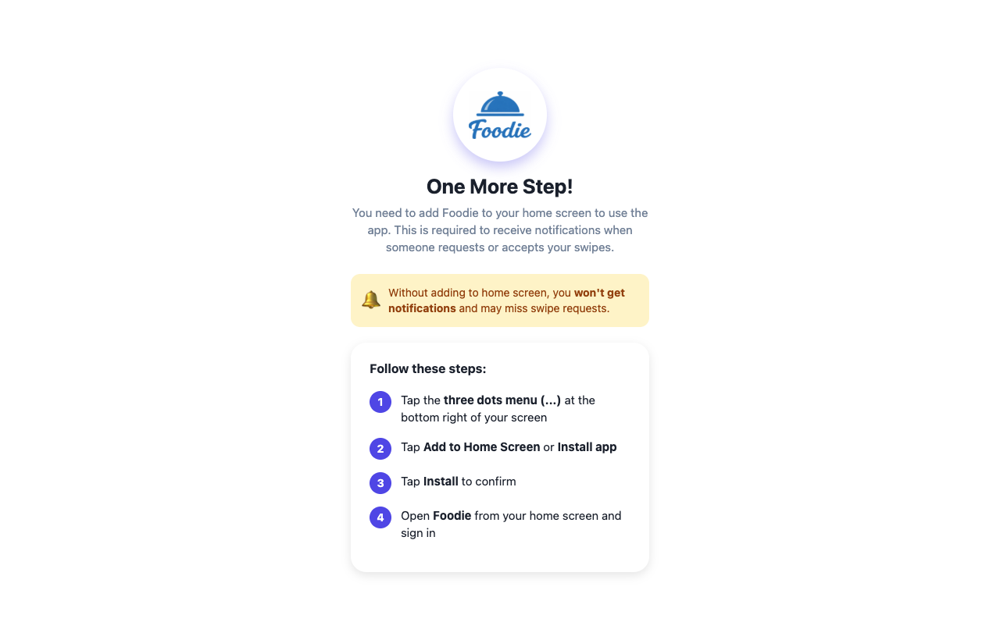
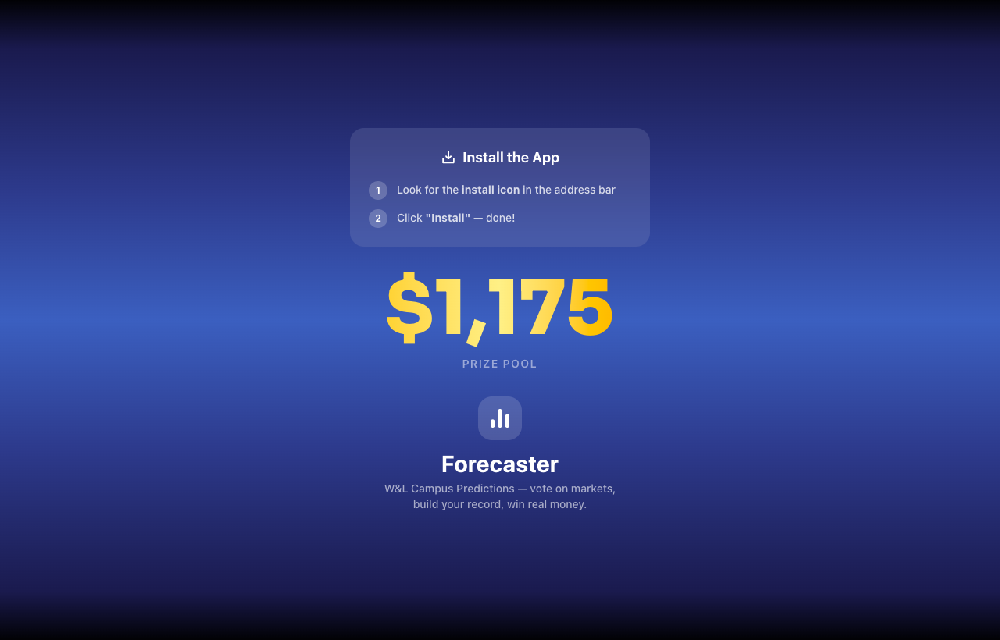
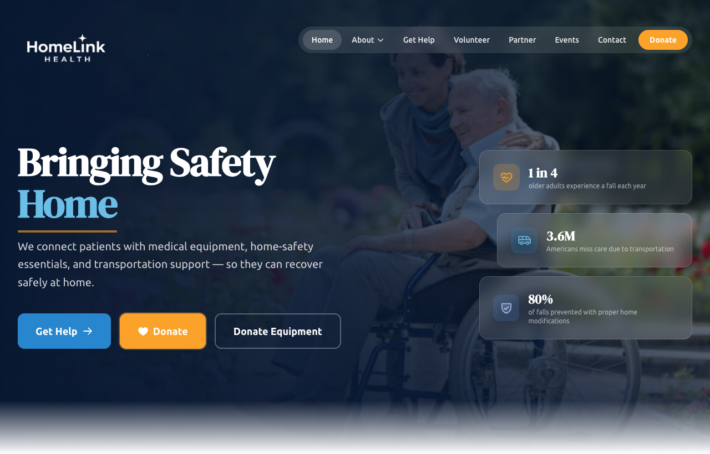
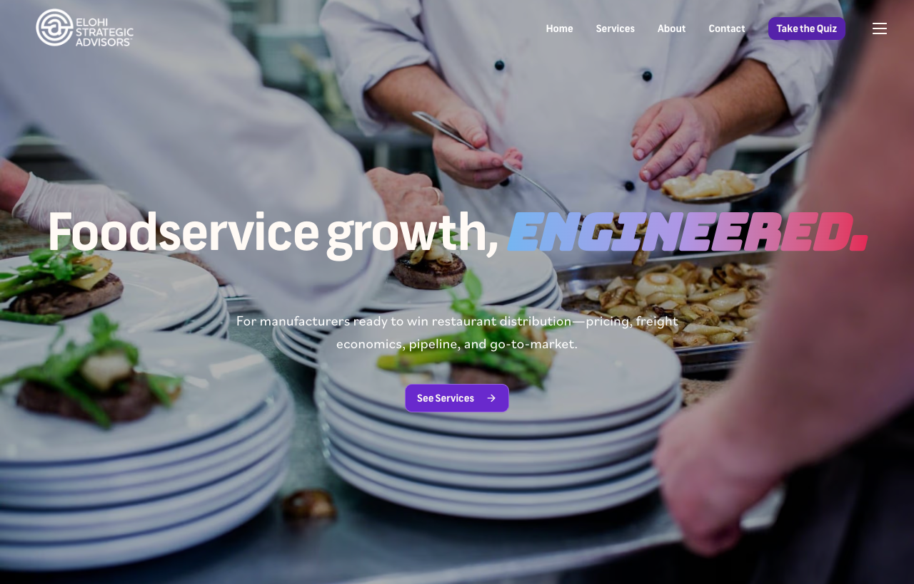
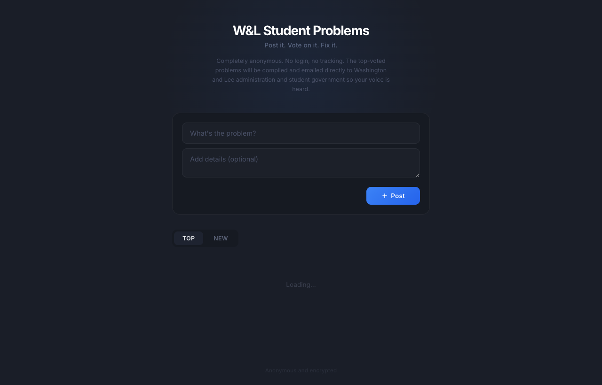

01
rPPG Robustness Report
A personal research project testing camera-based heart-rate estimates in low light using Remote Photoplethysmography (rPPG).
I’m a big fan of Andrew Huberman and Lex Fridman’s podcasts, GothamChess videos, especially Guess the Elo, Casey Neistat as a whole, and Matt Spears’ abandoned railroad videos. I also recommend Peter Santenello for learning about the U.S. and its different places and social scenes. I enjoy La Revuelta and have been a fan for the past six years.
I really enjoy reading Paul Graham’s essays about startups, ideas, and life.

A personal research project testing camera-based heart-rate estimates in low light using Remote Photoplethysmography (rPPG).

A PWA app for turning fraternity composite photos into LinkedIn profiles. Uses OCR and CNN technology to extract data.

A site that connects W&L's Connolly Entrepreneurship Society members with alumni and people in the startup space.

A grain-free granola brand website that I built for a student business on campus.

A site for reviewing and managing applicant information to the Connolly Entrepreneurship Society.

A PWA campus meal-swipe exchange platform for W&L students.

A PWA forecasting page for Washington and Lee-related questions, inspired by Polymarket.

Website I built for a non-profit that raised $5,000 for charity.

Prototype website I built for a food-consulting company based in Chicago, Illinois.

A deprecated site for collecting and browsing W&L problems.